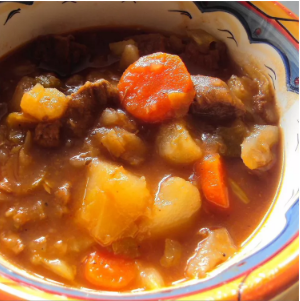

Home
Beef and Cabbage Stew

Description
This beef and cabbage stew is a very good recipe. My 93-year-old mother-in-law has recently told me that this is the best meal I have ever brought her, and there have been many. All the veggie prep can be done while the onions and bay leaves are simmering. I do add more broth when the veggies go in. The cabbage will add a significant amount of water but the beef flavor is key. It will freeze great in resealable bags for a quick meal so I normally double the recipe when going to this effort, which in my opinion is well worth it. The 2-hour simmering step for the beef can be done the day before.
Ingredients
-
Meat: This super meaty lasagna has sweet Italian sausage and lean ground beef.
-
1 ½ pounds beef stew meat, cut into 1-inch pieces
-
1 cube beef bouillon
-
2 cups beef broth
-
1 large onion, chopped
-
¼ teaspoon ground black pepper
-
1 bay leaf
-
4 cups shredded cabbage
-
2 potatoes, peeled and cubed
-
2 celery ribs, sliced
-
1 carrot, sliced
-
1 (8 ounce) can tomato sauce
-
salt to taste
Steps
-
Make the meat sauce.
-
Stir beef bouillon into beef broth in a bowl until dissolved; pour over stew meat. Add onion, black pepper, and bay leaf; cover and simmer until stew meat is very tender, at least 2 hours.
-
Add cabbage, potatoes, celery, and carrot; cover and simmer until potatoes are tender, 30 to 45 more minutes.
-
Stir tomato sauce and salt into the stew; simmer, uncovered, until tomato sauce is fully incorporated and flavors have blended, 15 to 20 minutes.
Home